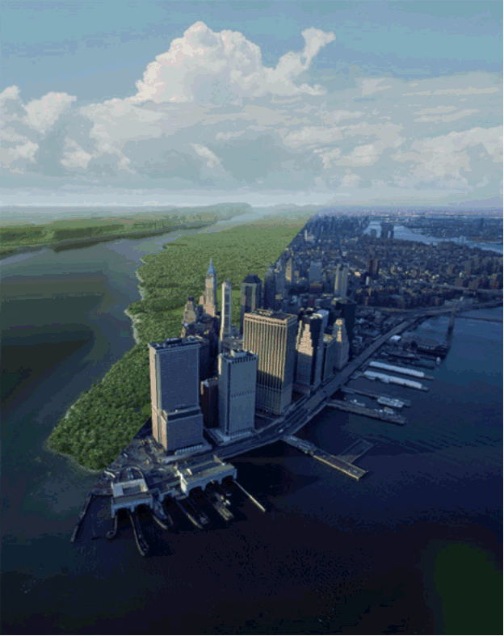
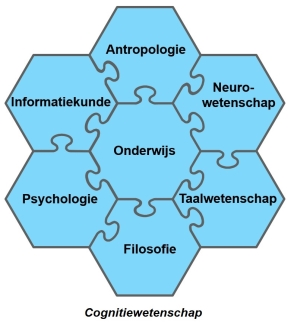

De Mens is het enige schepsel dat weigert te
zijn wat hij is.
~ Albert Camus
Het heeft mij altijd mateloos gefascineerd hoe
het mens-zijn in al zijn varianten uiteindelijk slechts op basis
van 'biologische overeenkomsten' bepaald wordt, zeker in het
materialistische mensbeeld. De paradox is dat daardoor onmenselijke
mensen (kunnen) bestaan; wezens die alle materiële kenmerken
van een mens vertonen maar zich ronduit onmenselijk gedragen, en
toch (blijkbaar) volgens iedereen nog steeds mens
zijn...
We worden echt allemaal geboren als dieren, als
biologische creaturen, met de potentie om mensen te worden. En
vanaf dat startpunt kunnen we een dier blijven, of ons ontwikkelen
tot beesten, of ons ontwikkelen tot mensen. Dat verklaart het wezen
van onze biologische variant op de andere primaten: geheel tegen de
evolutietheorie van Darwin in blijkt een groot deel van de
exemplaren van het mensdier niet te (willen)
overleven door zich
aan te passen aan de veranderingen in zijn
omgeving, maar andersom:
overleven door de omgeving mateloos aan te passen aan de eigen
wensen en verlangens. Het grote deel van de exemplaren van het
mensdier dat op deze manier contra-evolutionair de wereld naar
eigen hand wil en weet te zetten noem ik
Hoofdmensen.
De intuïtieve geest is een heilig
geschenk en het rationele verstand een trouwe dienaar. We hebben
een maatschappij gecreëerd die de dienaar eert en het geschenk
heeft vergeten. ~Albert
Einstein*
We leven in een wereld van Hoofdmensen,
gecreëerd en gecontroleerd (beheerst) door Hoofdmensen. De
paradigma's binnen onze nu bijna volledig synthetische, 'plastic'
leefomgevingen en de bijbehorende kunstmatige en onnatuurlijke
processen zijn (na)gebouwd op puur mechanische principes: de wereld
als machine. De natuurlijke echtheid van bijna alles is vervangen
door de 'betere' rationele en simpeler synthetische versie waarvoor
geen intuïtie meer nodig is... We hebben daardoor een
'menselijke wereld' gecreëerd die per
saldo onnatuurlijk en onmenselijk is. En we hebben een harteloze
definitie van 'de mens' bedacht die slechts rationeel kloppend is
gemaakt. Met dit boek stel ik de hamvraag aan de
orde: aan wie laten we
de regie van ons leven over? Het Hartmens™ model geeft de
mogelijkheid om te 'doorzien' hoe dat blijkbaar bij onszelf en bij
andere mensen ‘zit’. Dat het aannemelijk is dat Dick
Maas de regie over zijn leven op het niveau van het brein belegt,
bijvoorbeeld. En dat hij daarmee tot de overgrote meerderheid
behoort zoals blijkt uit onze wereld. Dit boek is vooral een
pleidooi om de regie over jouw leven zo hoog mogelijk te leggen; op
het niveau van het hart. Albert Einstein noemde ruim vijftig jaar
geleden de maatschappij al een product van de dienaar 'hersenen';
van het rationele verstand, en hij zei dat wij de heilige gave van
de intuïtieve of metaforische geest (slechts bereikbaar via het hart) toen al
volkomen waren vergeten…

Manhattan. Links origineel. Rechts het werk
van (hoofd)mensen.**
"Elk mens krijgt een smaller en smaller
kennisgebied waarin hij een expert moet zijn om te kunnen
concurreren met andere mensen. De specialist weet meer en meer over
steeds minder en minder en uiteindelijk weet hij alles over niets."
~Konrad Lorenz 1903-1989, Oostenrijks Zoöloog en
Etnoloog.
Ook in de wetenschap is intussen een groeiend
besef van de grote risico's en nadelen van het ongeremd
specialiseren en 'steeds meer weten van steeds minder'
doorgedrongen, en dringt het besef van de inter-afhankelijkheid van
alles door. Van alles!. Er is zeker een acute noodzaak tot ook het
herstel van de balans tussen dogmatische 'zuivere wetenschap' en
'de rest', inclusief de filosofie en de kunst. Dit boek is
geschreven vanuit de optiek van de Cognitiewetenschap (zie hierna)
een interdisciplinaire tak die weer een breder, opener,
toepassingsgerichte en onderzoekende wetenschapshouding mogelijk
maakt.

Het Hartmens™ model in dit boek is een
typisch 'product' van deze interdisciplinaire benadering, dus
vanuit zowel de neurowetenschap als vanuit antropologie,
informatiekunde, psychologie, taalwetenschap, onderwijs en
filosofie. En vanuit de rest, ofwel terug naar de natuurlijke,
originele en totale ervaring (perceptie,
beleving).
Het Hartmens™ model biedt ook impliciet een
verklaring voor hoe-het-zo(-ver)-kon-komen en een solide raamwerk
voor de oplossing/uitweg. Een wetenschappelijk model dat de
intuïtieve geest van harte uitnodigt de knecht (het verstand)
eens stevig aan te pakken.
Dit boek is dus ook een kennismaking met de
Hartmens, inclusief het Hartmens™ model, en een handreiking
aan Hoofdmensen om er praktisch mee aan de slag te gaan. Het
Hartmens™ model brengt vooral simpele structuur en inzicht en
voegt dimensies en inhoud toe aan bekende bestaande modellen en
maakt ze completer en meer toepasbaard. Dat geldt bijvoorbeeld voor
het Cynefin model van Dave Snowden, Het 7Habits model van Stephen
Covey, de Piramide van Maslow, het Hersenkundig dementie-model van
Anneke van der Plaats, het Kennismanagement model van Mathieu
Weggeman, de 'Waardenketen van Gedrag' van Paul Jansen / Joop
Swieringa, het Super Brain model van Deepak Chopra tot en met het
evolutie-model van Darwin, en dat van Ken
Wilber.
_______________________________
* "Der
intuitive Geist ist ein heiliges Geschenk und der rationale
Verstand ein treuer Diener. Wir haben eine Gesellschaft erschaffen,
die den Diener ehrt und das Geschenk vergessen
hat." ~Albert
Einstein
** Time-travel Photography -
dornob.com